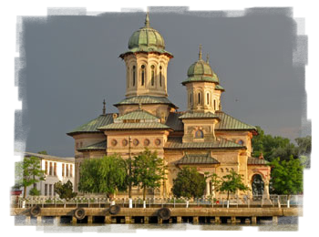

Biserica Sf. Alexandru şi Sf. Nicolae
882 reprezintă pentru Sulina anul în care este conştientizată construirea unei noi noi biserici. Astfel, viaţa religioasă de la gurile Dunării capătă o altă dimensiune odată cu sosirea preotului V. Gheorghiu, care transformă nevoia realizării acestei construcţii din vis în realitate.